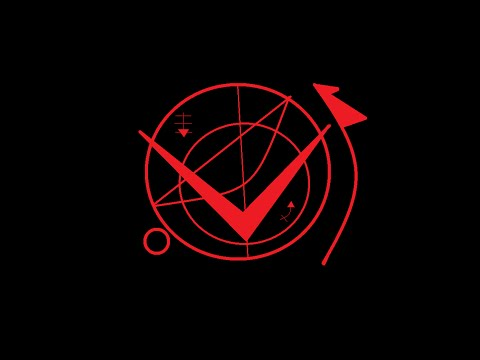
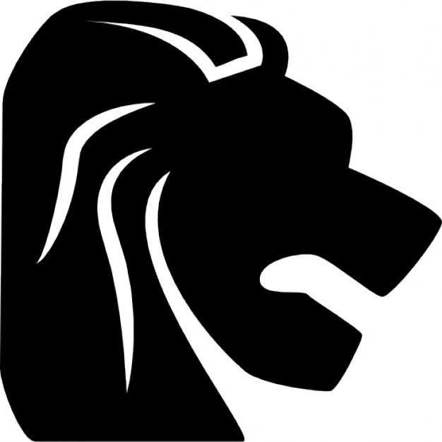
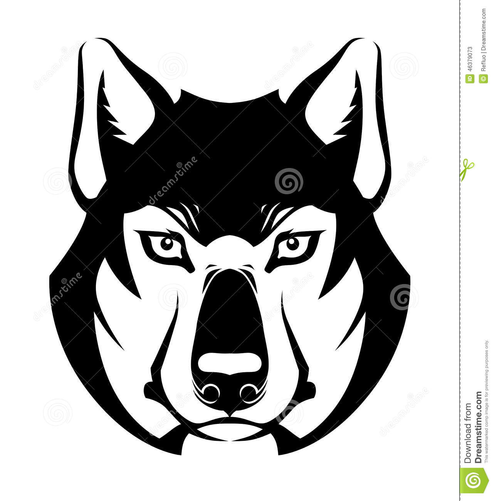
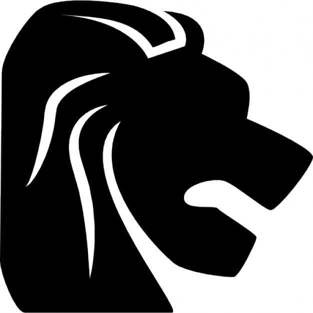
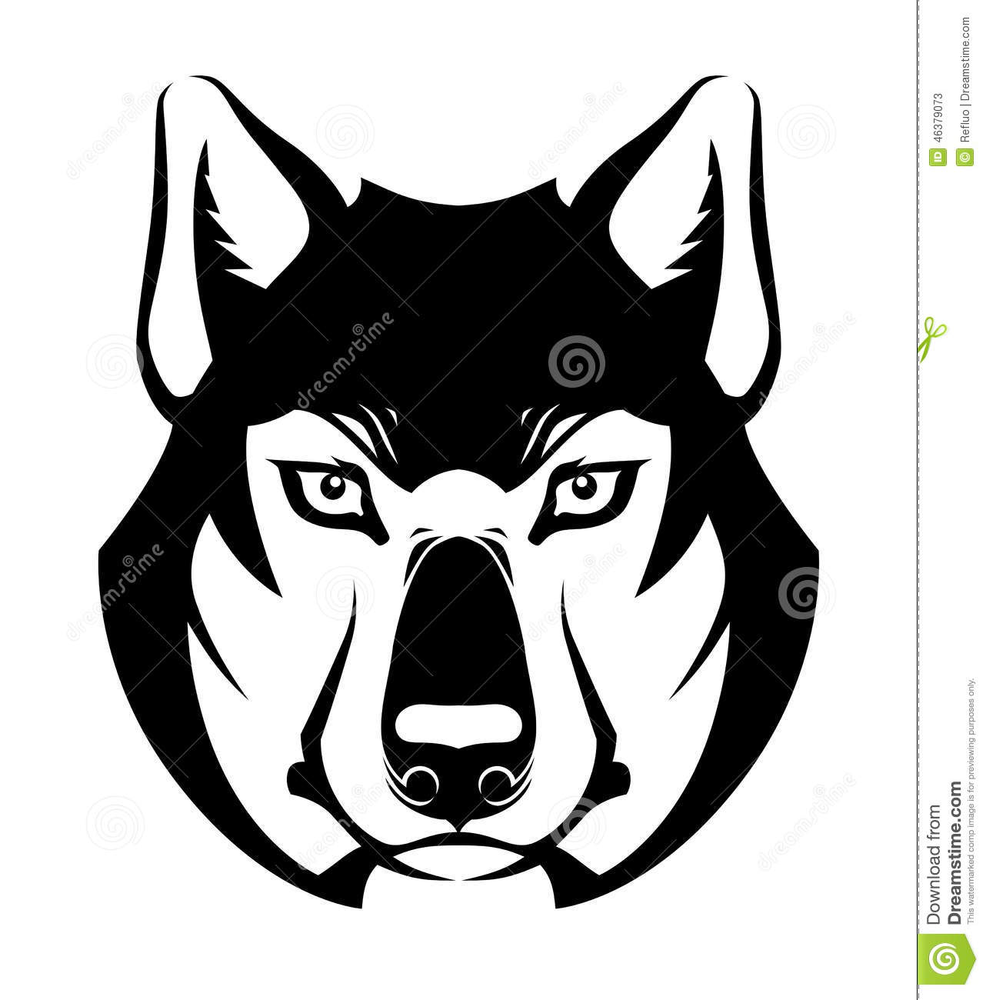

Singing of the vampires.pdf necropolis.pdf Grimoires.pdf Grimoire of jaiden.pdf
Level one spell This is a level one beginner spell, being level one this does not bring consequences. This echico is called. I cast a spell of good fortune. The spell Has the ability to capture high energy positive ranks to seal them the spell was created by the echizeros so that when they passed a path Dangerous or mysterious. Even there are things that can serve the spell today. Are: pass a test, declare love and be reciprocated, win a match, etc. This spell works by faith and the intelligence of the echizero. Faith is the belief that the spell works and the positive energy is the normal energy Which is done by making a spell. In short the spell will work if you believe in it. The sealing process must be specified with red ink, as in this image You must draw the largest circle and then divide it in half with a ruler You must draw the largest circle and then divide it in half with a ruler You must draw the figure outside the right side The others are done as you want them until in the end you draw a small circle outside the circle  sombilos magicos   simboliza coraje, liderasgo y necedad el lobo representa, familia, perseverancia, esfuerzo, representa liderasgo, superioridad, violencia, no va para las personas que ignoran a casi tot, les etc, confian mucho en la familia, les gusta hacer amigo, crueldad y seriedad. son personas de pocos amigos, gusta jugar con sus rivales y manipular, no no se sienten perfectos, estas personas les gusta mucho gusta una multitud de amigo, tienden mucho a muestran debilidad para denotar el liderazgo, la luna no se sabe el prque pero lohace, son muy amorosos es solucionar todo con violencia, les hes dificil les gusta hacerse notar, son las personas que su debilidad es quedarse solos. a este tipo de personas mostrar emociones positivas, prefieren hacer lo prefieren mas a la familia que a los amigo, se les llama lunares, correcto aunque tengan que fracasar, no les a estos estas personas con el simnolo de leon se gusta meterse en los temas de los demas, le tienen un gran les llama fugazes
sombilos magicos   simboliza coraje, liderasgo y necedad el lobo representa, familia, perseverancia, esfuerzo, representa liderasgo, superioridad, violencia, no va para las personas que ignoran a casi tot, les etc, confian mucho en la familia, les gusta hacer amigo, crueldad y seriedad. son personas de pocos amigos, gusta jugar con sus rivales y manipular, no no se sienten perfectos, estas personas les gusta mucho gusta una multitud de amigo, tienden mucho a muestran debilidad para denotar el liderazgo, la luna no se sabe el prque pero lohace, son muy amorosos es solucionar todo con violencia, les hes dificil les gusta hacerse notar, son las personas que su debilidad es quedarse solos. a este tipo de personas mostrar emociones positivas, prefieren hacer lo prefieren mas a la familia que a los amigo, se les llama lunares, correcto aunque tengan que fracasar, no les a estos estas personas con el simnolo de leon se gusta meterse en los temas de los demas, le tienen un gran les llama fugazes